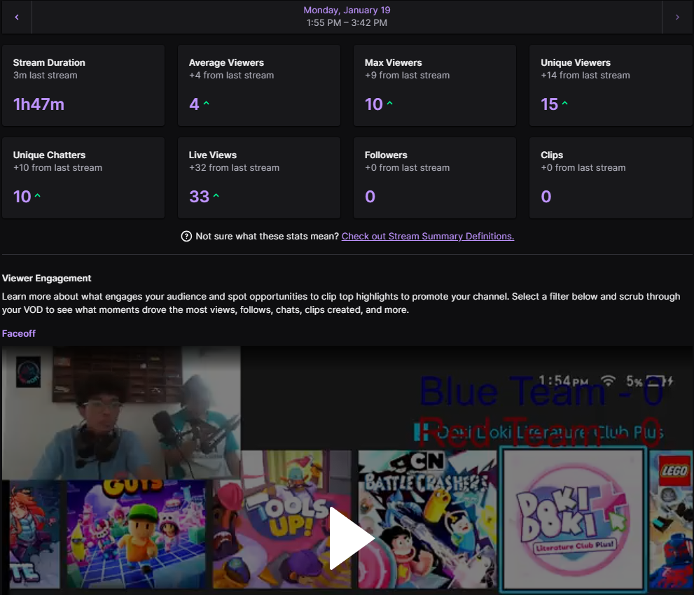

Based on the final stream analytics, the stream reached 33 total live viewers, with a maximum of 10 concurrent viewers and an average of 4 viewers. The stream lasted 1 hour and 47 minutes and had 10 unique chatters, indicating active participation despite moderate viewership. These results show that although the number of viewers was limited, those who stayed were engaged and interactive, as shown by the number of unique chat participants.
Views: 33
Total Watch Time: 1.47hours
Chat Engagement: moderate
Peak Viewers: